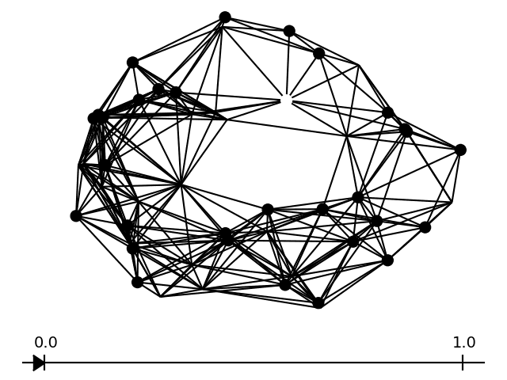

My research focuses on graph data analysis. It borrows ideas from Topological Data Analysis, a recent field that aims at extracting and exploiting topological information out of complex data. More precisely, I work toward developing statistically well-founded and implementable methods to study graph structured data.
|  |
Heat diffusion distance processes: a statistically founded method to analyze graph data sets. [arxiv] We propose two multiscale comparisons of graphs using heat diffusion, allowing to compare graphs without node correspondence or even with different sizes. These multiscale comparisons lead to the definition of Lipschitz-continuous empirical processes indexed by a real parameter. The statistical properties of empirical means of such processes are studied in the general case. Under mild assumptions, we prove a functional Central Limit Theorem, as well as a Gaussian approximation with a rate depending only on the sample size. Once applied to our processes, these results allow to analyze data sets of pairs of graphs. We design consistent confidence bands around empirical means and consistent two-sample tests, using bootstrap methods. Their performances are evaluated by simulations on synthetic data sets. |
When working with weighted graphs, one can interpret weights as the thermal conductivity of edges. This means that heat diffuses faster along edges with higher weights. Given initial conditions, one can use the way heat diffuses to compare graphs. But choosing a relevant and informative diffusion time is often essential and challenging. To circumvent this issue, we choose to take into account the whole diffusion process. For that, we define real-valued processes indexed by all the diffusion times in [0, T] for some T > 0, namely the Heat Kernel Distance (HKD) process and the Heat Persistence Distance (HPD) process. Borrowing tools from TDA, the HPD process is able to compare graphs without known node correspondence or even graphs with different sizes. In this talk, I will introduce these processes and present their statistical properties. Namely, we proved under mild assumptions that they verify a functional central limit theorem and admit a gaussian approximation. Moreover, I will present potential applications of these processes (the construction of confidence bands and two-sample tests).
When working with weighted graphs, one can interpret weights as the thermal conductivity of edges. This means that heat diffuses faster along edges with higher weights. Given initial conditions, one can use the way heat diffuses to compare graphs. But choosing a relevant and informative diffusion time is often essential and challenging. To circumvent this issue, we choose to take into account the whole diffusion process. For that, we define real-valued processes indexed by all the diffusion times in [0, T] for some T > 0, namely the Heat Kernel Distance (HKD) process and the Heat Persistence Distance (HPD) process. Borrowing tools from TDA, the HPD process is able to compare graphs without known node correspondence or even graphs with different sizes. In this talk, I will introduce these processes and present their statistical properties. Namely, we proved under mild assumptions that they verify a functional central limit theorem and admit a gaussian approximation. Moreover, I will present potential applications of these processes (the construction of confidence bands and two-sample tests, the study of neural networks through their activation graphs).
The Central Limit Theorem indicates that a properly rescaled sum of random variables converges in distribution to a gaussian distribution.
This is where the gaussian approximation problem arises :
is it possible to draw these random variables, as well as a gaussian variable, such that the rescaled sum and the gaussian variable are close?
The presentation starts by a few reminders concerning standard probability results : law of large numbers, central limit theorem, Berry-Essen theorem, and quantile transformation.
Then, historical results on gaussian approximation are presented.
It includes, for the real case, the Skorokhod embedding and the Komlos Major and Tusnady (KMT) approach,
as well as Zaitsev's results for the multidimensional case and Koltchinskii's results for general empirical processes.
The end of this presentation concerns my thesis subject and its link with the gaussian approximation problem for random functions.
Subject proposed by french company Eurecam : Reconstruction of trajectories from real life 3D detections of people. We choose to use optimal transport with boundary to reconstruct trajectories frame by frame. We proposed an ad hoc minimization problem. Pre-processing and post-processing steps were implemented to obtain better reconstructions. Our work can be found here.